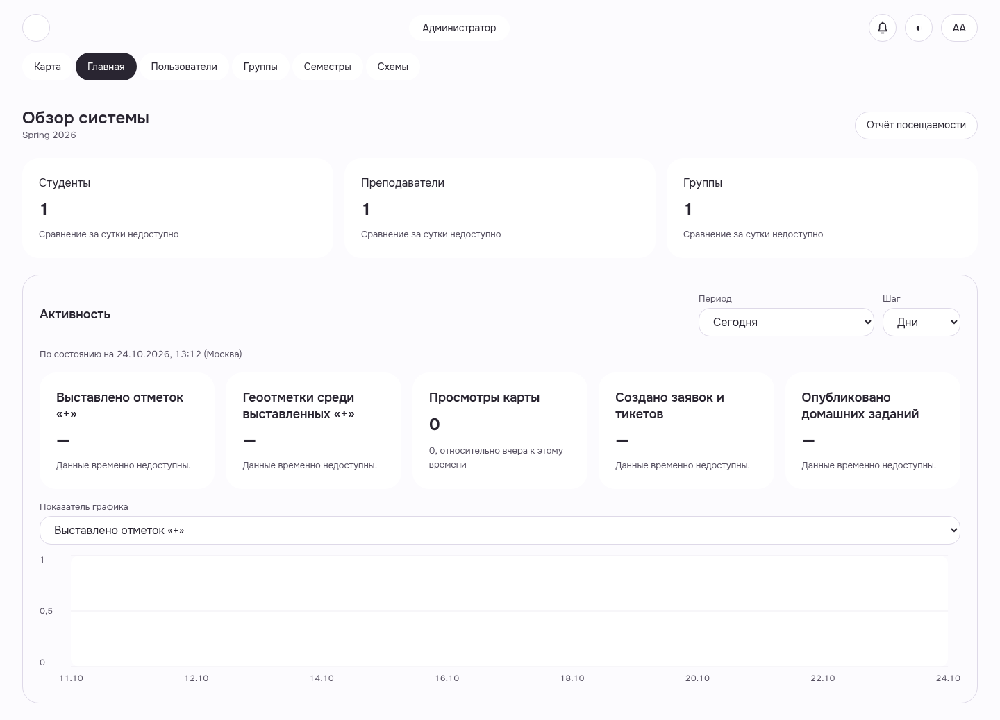
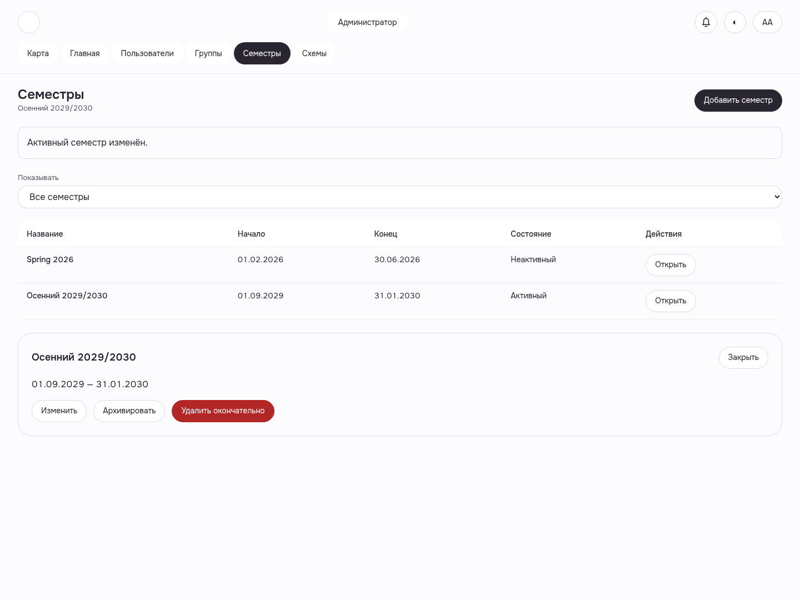

Настоящий искусственный стенд с Auth; общий health и downstream delivery не приняты.
Свежий вход администратора
После выбора ADMIN открыт canonical home. Часть метрик недоступна: этот кадр подтверждает вход и навигацию, без приёмки данных dashboard.
WEB-ADMIN-DASHBOARD__fresh-role-home__light__1440__0421d344c · light1440 · source0421

Семестр активирован
Один настоящий activate200: новый семестр активен, предыдущий деактивирован. Независимый SQL и outbox подтверждены; общий health/async delivery не приняты.
WEB-ADMIN-SEMESTERS__active-semester-changed__light__1440__0421d344c · light1440 · source0421
